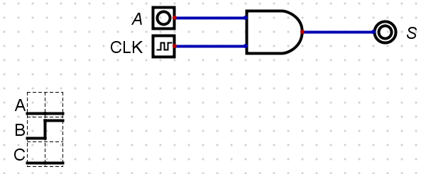
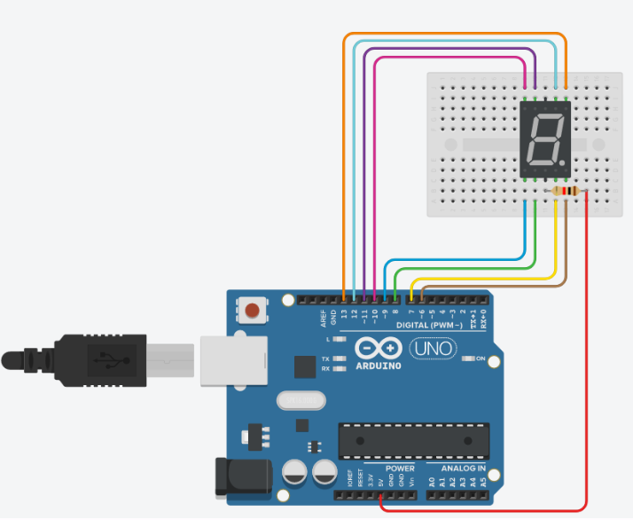

|
The mdBook accessed outside of blackboard and is mobile and tablet friendly. :
|
Workshop on Boolean Algebra
The Workshop on Boolean Algebra is designed for you to practice Boolean equations and its laws.
Minimising Boolean Expressions
We can use Commutative, Associative, and Distributive Laws to manipulate Boolean expressions.
BOOLEAN LAWS
Commutative Laws
-
\(A + B \Longleftrightarrow B + A\)
-
\(A.B \Longleftrightarrow B.A\)
Associative Laws
-
\((A + B) + C \Longleftrightarrow A + (B + C)\)
-
\((A.B).C \Longleftrightarrow A.(B.C)\)
Distributive Laws
-
\(A + (B + C) \Longleftrightarrow (A + B) + (A + C)\)
-
\(A.(B.C) \Longleftrightarrow (A.B) + (A.C)\)
Axioms
The following rules (axioms) can also be used to minimise Boolean Expressions:
1.
-
A literal by itself cancels out any term that contains it (Absorption):
- \(A + A.B + A.B.C \Longrightarrow A + \)
A.B+A.B.C\(\Longrightarrow A\)
- \(A + A.B + A.B.C \Longrightarrow A + \)
2.
-
A literal by itself knocks out its NOT'ed opposite that appears in any 'minterm' (Absorption):
- \(\overline{A} + A.\overline{B} + A.C \Longrightarrow \overline{A} +\)
A\(.\overline{B} +\)A\(.C \Longrightarrow \overline{A} + \overline{B} + C\)
- \(\overline{A} + A.\overline{B} + A.C \Longrightarrow \overline{A} +\)
Exercise: One
Minimise the following Boolean Expressions:
1. \(\hspace{1.75em}S = \overline{A} + A.C + \overline{B}.C\)
Click for Solution
\(S = \overline{A} + \)A\(.C + \overline{B}.C\)
\(S = \overline{A} + C +\) B.C
\(S = \overline{A} + C\)
2. \(\hspace{1.75em}S = A.C + A.B.C + A.B.\overline{C}\)
Click for Solution
\(S = A.C + A.B.(C + \overline{C})\)
\(S = A.C + A.B.(1)\)
\(S = A.C + A.B\)
3. \(\hspace{1.75em}S = \overline{B} + A.B + A.\overline{B}.C\)
Click for Solution
\(S = \overline{B} + A.\) B \(+\) A.B.C
\(S = \overline{B} + A\)
4. \(\hspace{1.75em}S = \overline{A}.\overline{B}.\overline{C} + A.\overline{B}.\overline{C} + A.C\)
Click for Solution
\(S = \overline{B}.\overline{C}.(A + \overline{A}) + A.C\)
\(S = \overline{B}.\overline{C}.(1) + A.C\)
\(S = \overline{B}.\overline{C} + A.C\)
5. \(\hspace{1.75em}S = C + A.\overline{C} + B.C + A.B.C\)
Click for Solution
\(S = C + A.\)C \(+\) B.C \(+\) A.B.C
\(S = C + A\)
6. \(\hspace{1.75em}S = A.B.\overline{C} + A.B.C + A.\overline{B}.\overline{C} + A.\overline{B}.C + \overline{A}.B.C + \overline{A}.B.\overline{C}\)
Click for Solution
\(S = A.B.(\overline{C} + C) + A.\overline{B}.(\overline{C} + C) + \overline{A}.B.(C + \overline{C})\)
\(S = A.B.(1) + A.\overline{B}.(1) + \overline{A}.B.(1)\)
\(S = A.B + A.\overline{B} + \overline{A}.B\)
\(S = A.(B + \overline{B}) + \overline{A}.B\)
\(S = A.(1) + \overline{A}.B\)
\(S = A +\)A\(.B\)
\(S = A + B\)
7. \(\hspace{1.75em}S = A + B.C + \overline{A}.B.C\)
Click for Solution
\(S = A + B.C +\) A \(.B.C\)
\(S = A + B.C +\) B.C
\(S = A + B.C\)
8. \(\hspace{1.75em}S = B + \overline{A}.B.\overline{C} + A.B.\overline{C} + \overline{A}.C\)
Click for Solution
\(S = B +\) A.B.C \(+\) A.B.C \(+ \overline{A}.C\)
\(S = B + \overline{A}.C\)
Exercise: Two
For each of the following truth tables produce the standard Sum of the Product Terms for the output \(S\). The reduce the Boolean expression to a simpler expression using Boolean algebra.
1.
| A | B | S |
|---|---|---|
| 0 | 0 | 1 |
| 0 | 1 | 1 |
| 1 | 0 | 1 |
| 1 | 1 | 0 |
Click for Solution
\(S = \overline{A}.\overline{B} + \overline{A}.B + A.\overline{B}\)
\(S = \overline{A}.(\overline{B} + B) + A.\overline{B}\)
\(S = \overline{A}.(1) + A.\overline{B}\)
\(S = \overline{A} + A.\overline{B}\)
\(S = \overline{A} +\) A}\(.\overline{B}\)
\(S = \overline{A} + \overline{B}\)
2.
| A | B | S |
|---|---|---|
| 0 | 0 | 0 |
| 0 | 1 | 1 |
| 1 | 0 | 1 |
| 1 | 1 | 0 |
Click for Solution
\(S = \overline{A}B + A\overline{B}\)
3.
| A | B | C | S |
|---|---|---|---|
| 0 | 0 | 0 | 1 |
| 0 | 0 | 1 | 1 |
| 0 | 1 | 0 | 0 |
| 0 | 1 | 1 | 0 |
| 1 | 0 | 0 | 0 |
| 1 | 0 | 1 | 0 |
| 1 | 1 | 0 | 0 |
| 1 | 1 | 1 | 0 |
Click for Solution
\(S = \overline{A}.\overline{B}.\overline{C} + \overline{A}.\overline{B}.C\)
\(S = \overline{A}.\overline{B}.(\overline{C} + C)\)
\(S = \overline{A}.\overline{B}.(1)\)
\(S = \overline{A}.\overline{B}\)
4.
| A | B | C | S |
|---|---|---|---|
| 0 | 0 | 0 | 0 |
| 0 | 0 | 1 | 1 |
| 0 | 1 | 0 | 0 |
| 0 | 1 | 1 | 1 |
| 1 | 0 | 0 | 0 |
| 1 | 0 | 1 | 1 |
| 1 | 1 | 0 | 0 |
| 1 | 1 | 1 | 1 |
Click for Solution
\(S = \overline{A}.\overline{B}.C + \overline{A}.B.C + A.\overline{B}.C + A.B.C\)
\(S = \overline{B}.C.(\overline{A} + A) + B.C.(\overline{A} + A)\)
\(S = \overline{B}.C.(1) + B.C.(1)\)
\(S = \overline{B}.C + B.C\)
\(S = C.(\overline{B} + B)\)
\(S = C.(1)\)
\(S = C\)
5.
| A | B | C | S |
|---|---|---|---|
| 0 | 0 | 0 | 1 |
| 0 | 0 | 1 | 1 |
| 0 | 1 | 0 | 0 |
| 0 | 1 | 1 | 1 |
| 1 | 0 | 0 | 0 |
| 1 | 0 | 1 | 0 |
| 1 | 1 | 0 | 0 |
| 1 | 1 | 1 | 1 |
Click for Solution
\(S = \overline{A}.\overline{B}.\overline{C} + \overline{A}.\overline{B}.C + \overline{A}.B.C + A.B.C\)
\(S = \overline{A}.\overline{B}.(\overline{C} + C) + B.C.(\overline{A} + A)\)
\(S = \overline{A}.\overline{B}.(1) + B.C.(1)\)
\(S = \overline{A}.\overline{B} + B.C\)
6.
| A | B | C | S |
|---|---|---|---|
| 0 | 0 | 0 | 0 |
| 0 | 0 | 1 | 0 |
| 0 | 1 | 0 | 1 |
| 0 | 1 | 1 | 1 |
| 1 | 0 | 0 | 0 |
| 1 | 0 | 1 | 1 |
| 1 | 1 | 0 | 1 |
| 1 | 1 | 1 | 1 |
Click for Solution
\(S = \overline{A}.\overline{B}.\overline{C} + \overline{A}.\overline{B}.C + \overline{A}.B.C + A.B.C\)
\(S = \overline{A}.\overline{B}.(\overline{C} + C) + B.C.(\overline{A} + A)\)
\(S = \overline{A}.\overline{B}.(1) + B.C.(1)\)
\(S = \overline{A}.\overline{B} + B.C\)
7.
| A | B | C | S |
|---|---|---|---|
| 0 | 0 | 0 | 0 |
| 0 | 0 | 1 | 0 |
| 0 | 1 | 0 | 1 |
| 0 | 1 | 1 | 1 |
| 1 | 0 | 0 | 0 |
| 1 | 0 | 1 | 1 |
| 1 | 1 | 0 | 1 |
| 1 | 1 | 1 | 1 |
Click for Solution
\(S = \overline{A}.B.\overline{C} + \overline{A}.B.C + A.\overline{B}.C + A.B.\overline{C} + A.B.C\)
\(S = \overline{A}.B.(\overline{C} + C) + A.\overline{B}.C + A.\overline{B}.(\overline{C} + C)\)
\(S = \overline{A}.B.(1) + A.\overline{B}.C + A.\overline{B}.(1)\)
\(S = \overline{A}.B + A.\overline{B}.C + A.\overline{B}\)
\(S = B.(\overline{A} + A) + A.\overline{B}.C\)
\(S = B.(1) + A.\overline{B}.C\)
\(S = B + A.\overline{B}.C\)
\(S = B + A.\) B \(.C\)
\(S = B + A.C\)
8.
| A | B | C | S |
|---|---|---|---|
| 0 | 0 | 0 | 0 |
| 0 | 0 | 1 | 0 |
| 0 | 1 | 0 | 0 |
| 0 | 1 | 1 | 1 |
| 1 | 0 | 0 | 1 |
| 1 | 0 | 1 | 1 |
| 1 | 1 | 0 | 1 |
| 1 | 1 | 1 | 1 |
Click for Solution
\(S = \overline{A}.B.C + A.\overline{B}.\overline{C} + A.\overline{B}.C + A.B.\overline{C} + A.B.C\)
\(S = \overline{A}.B.C + A.\overline{B}.(\overline{C} + C) + A.B.(\overline{C} + C)\)
\(S = \overline{A}.B.C + A.\overline{B}.(1) + A.B.(1)\)
\(S = \overline{A}.B.C + A.\overline{B} + A.B\)
\(S = \overline{A}.B.C + A.(\overline{B} + B)\)
\(S = \overline{A}.B.C + A.(1)\)
\(S = \overline{A}.B.C + A\)
\(S =\) A \(B.C + A\)
\(S = B.C + A\)
Number Systems Exercises
The Number System lab is designed for you to practice converting between different bases.
Binary Numbers
Binary is a base 2 numbering system. There are only two symbols used, 0 and 1.
Binary Positional Values
| MSB | LSB | |||||||||
|---|---|---|---|---|---|---|---|---|---|---|
| $$2^{10}$$ | $$2^{9}$$ | $$2^{8}$$ | $$2^{7}$$ | $$2^{6}$$ | $$2^{5}$$ | $$2^{4}$$ | $$2^{3}$$ | $$2^{2}$$ | $$2^{1}$$ | $$2^{0}$$ |
| 1024 | 512 | 256 | 128 | 64 | 32 | 16 | 8 | 4 | 2 | 1 |
Binary to Decimal Conversion
To convert from binary to decimal, we need to add together the positional values for all the columns containing a 1. We ignore the columns with a 0, as they have nothing in them.
| MSB | LSB | |||||||||
|---|---|---|---|---|---|---|---|---|---|---|
| $$2^{10}$$ | $$2^{9}$$ | $$2^{8}$$ | $$2^{7}$$ | $$2^{6}$$ | $$2^{5}$$ | $$2^{4}$$ | $$2^{3}$$ | $$2^{2}$$ | $$2^{1}$$ | $$2^{0}$$ |
| 1024 | 512 | 256 | 128 | 64 | 32 | 16 | 8 | 4 | 2 | 1 |
| 0 | 0 | 0 | 1 | 0 | 0 | 1 | 0 | 1 | 1 | 0 |
In the above example, there are 1s in the \(2^7\), \(2^4\), \(2^2\) and \(2^1\) columns.
Therefore the decimal equivalent value is:
\[ \begin{aligned} 2^7 &= 128\\ 2^4 &= \hspace{0.5em}16 \\ 2^2 &= \hspace{1em} 4 \\ 2^1 &= \hspace{1em} 2 \hspace{0.5em}+ \\ \hline 000 1001 0110 & \equiv 150_{10} \end{aligned} \]
Binary to Decimal Conversion Exercises
Convert the following binary numbers into decimal:
| $$2^7$$ | $$2^6$$ | $$2^5$$ | $$2^4$$ | $$2^3$$ | $$2^2$$ | $$2^1$$ | $$2^0$$ | Decimal |
|---|---|---|---|---|---|---|---|---|
| 128 | 64 | 32 | 16 | 8 | 4 | 2 | 1 | |
| 0 | 1 | 0 | 1 | 0 | 1 | 0 | 1 | |
| 1 | 1 | 1 | 1 | 1 | 1 | 0 | 1 | |
| 1 | 0 | 0 | 0 | 0 | 0 | 1 | 0 | |
| 0 | 0 | 0 | 0 | 1 | 1 | 1 | 0 | |
| 1 | 1 | 0 | 0 | 1 | 0 | 0 | 1 | |
| 0 | 0 | 1 | 0 | 0 | 0 | 1 | 0 | |
| 1 | 1 | 0 | 1 | 1 | 1 | 0 | 1 | |
| 1 | 0 | 1 | 0 | 1 | 1 | 0 | 1 | |
| 0 | 0 | 1 | 1 | 0 | 0 | 1 | 0 |
Click for solutions
| $$2^7$$ | $$2^6$$ | $$2^5$$ | $$2^4$$ | $$2^3$$ | $$2^2$$ | $$2^1$$ | $$2^0$$ | Decimal |
|---|---|---|---|---|---|---|---|---|
| 128 | 64 | 32 | 16 | 8 | 4 | 2 | 1 | |
| 0 | 1 | 0 | 1 | 0 | 1 | 0 | 1 | 85 |
| 1 | 1 | 1 | 1 | 1 | 1 | 0 | 1 | 253 |
| 1 | 0 | 0 | 0 | 0 | 0 | 1 | 0 | 130 |
| 0 | 0 | 0 | 0 | 1 | 1 | 1 | 0 | 14 |
| 1 | 1 | 0 | 0 | 1 | 0 | 0 | 1 | 201 |
| 0 | 0 | 1 | 0 | 0 | 0 | 1 | 0 | 34 |
| 1 | 1 | 0 | 1 | 1 | 1 | 0 | 1 | 221 |
| 1 | 0 | 1 | 0 | 1 | 1 | 0 | 1 | 173 |
| 0 | 0 | 1 | 1 | 0 | 0 | 1 | 0 | 50 |
Decimal to Binary Conversion
To convert from decimal to Binary, we have two options. The first of these involves continually dividing by two, and is explained in the PowerPoint presentation. The shorter way involves dividing through by the positional values rather than two. For example:
$$171_{10}$$
The largest positional value which will divide into \(171_{10}\) once is \(2^7\) which is \(128_{10}\). We therefore place a 1 in the \(2^7\) column, and subtract \(128_{10}\) from \(171_{10}\):
| MSB | LSB | |||||||||
|---|---|---|---|---|---|---|---|---|---|---|
| $$2^{10}$$ | $$2^{9}$$ | $$2^{8}$$ | $$2^{7}$$ | $$2^{6}$$ | $$2^{5}$$ | $$2^{4}$$ | $$2^{3}$$ | $$2^{2}$$ | $$2^{1}$$ | $$2^{0}$$ |
| 1024 | 512 | 256 | 128 | 64 | 32 | 16 | 8 | 4 | 2 | 1 |
| 1 |
\[ \begin{aligned} & 171_{10}\\ & 128_{10} \hspace{1em} - \\ \hline & \hspace{0.5em}43_{10} \end{aligned} \]
- 43 is less than 64, so we put a 0 in the \(2^6\) column and move on to the \(2^5\) column. 43 is greater than 32, so we put a 1 in the \(2^5\) column and subtract 32 from 43:
| MSB | LSB | |||||||||
|---|---|---|---|---|---|---|---|---|---|---|
| $$2^{10}$$ | $$2^{9}$$ | $$2^{8}$$ | $$2^{7}$$ | $$2^{6}$$ | $$2^{5}$$ | $$2^{4}$$ | $$2^{3}$$ | $$2^{2}$$ | $$2^{1}$$ | $$2^{0}$$ |
| 1024 | 512 | 256 | 128 | 64 | 32 | 16 | 8 | 4 | 2 | 1 |
| 1 | 0 | 1 |
\[ \begin{aligned} & 43_{10}\\ & 32_{10} \hspace{1em} - \\ \hline & 11_{10} \end{aligned} \]
- 11 is less than 16, so we put a 0 in the \(2^4\) column and move on to the \(2^3\) column. 11 is greater than 8, so we put a 1 in the \(2^3\) column and subtract 8 from 11:
| MSB | LSB | |||||||||
|---|---|---|---|---|---|---|---|---|---|---|
| $$2^{10}$$ | $$2^{9}$$ | $$2^{8}$$ | $$2^{7}$$ | $$2^{6}$$ | $$2^{5}$$ | $$2^{4}$$ | $$2^{3}$$ | $$2^{2}$$ | $$2^{1}$$ | $$2^{0}$$ |
| 1024 | 512 | 256 | 128 | 64 | 32 | 16 | 8 | 4 | 2 | 1 |
| 1 | 0 | 1 | 0 | 1 |
\[ \begin{aligned} & 11_{10}\\ & \hspace{0.5em}8_{10} \hspace{1em}- \\ \hline & \hspace{0.5em}3_{10} \end{aligned} \]
- 3 is less than 4, so we put a 0 in the \(2^2\) column and move on to the \(2^1\) column. 3 is greater than 2, so we put a 1 in the \(2^1\) column and subtract 2 from 3:
| MSB | LSB | |||||||||
|---|---|---|---|---|---|---|---|---|---|---|
| $$2^{10}$$ | $$2^{9}$$ | $$2^{8}$$ | $$2^{7}$$ | $$2^{6}$$ | $$2^{5}$$ | $$2^{4}$$ | $$2^{3}$$ | $$2^{2}$$ | $$2^{1}$$ | $$2^{0}$$ |
| 1024 | 512 | 256 | 128 | 64 | 32 | 16 | 8 | 4 | 2 | 1 |
| 1 | 0 | 1 | 0 | 1 | 0 | 1 | 1 |
\[ \begin{aligned} & 1_{10}\\ & 1_{10} \hspace{1em}- \\ \hline & 0_{10} \end{aligned} \]
Decimal to Binary Conversion Exercises
Convert the following decimal numbers into binary:
| Decimal | $$2^7$$ | $$2^6$$ | $$2^5$$ | $$2^4$$ | $$2^3$$ | $$2^2$$ | $$2^1$$ | $$2^0$$ |
|---|---|---|---|---|---|---|---|---|
| 128 | 64 | 32 | 16 | 8 | 4 | 2 | 1 | |
| 165 | ||||||||
| 242 | ||||||||
| 7 | ||||||||
| 92 | ||||||||
| 63 | ||||||||
| 12 | ||||||||
| 129 | ||||||||
| 71 | ||||||||
| 45 |
Click for solutions
| Decimal | $$2^7$$ | $$2^6$$ | $$2^5$$ | $$2^4$$ | $$2^3$$ | $$2^2$$ | $$2^1$$ | $$2^0$$ |
|---|---|---|---|---|---|---|---|---|
| 128 | 64 | 32 | 16 | 8 | 4 | 2 | 1 | |
| 165 | 1 | 0 | 1 | 0 | 0 | 1 | 0 | 1 |
| 242 | 1 | 1 | 1 | 1 | 0 | 0 | 1 | 0 |
| 7 | 0 | 0 | 0 | 0 | 0 | 1 | 1 | 1 |
| 92 | 0 | 1 | 0 | 1 | 1 | 1 | 0 | 0 |
| 63 | 0 | 0 | 1 | 1 | 1 | 1 | 1 | 1 |
| 12 | 0 | 0 | 0 | 0 | 1 | 1 | 0 | 0 |
| 129 | 1 | 0 | 0 | 0 | 0 | 0 | 0 | 1 |
| 71 | 0 | 1 | 0 | 0 | 0 | 1 | 1 | 1 |
| 45 | 0 | 0 | 1 | 0 | 1 | 1 | 0 | 1 |
Hexadecimal Numbers
Hexadecimal is a base 16 numbering system. It uses 0 to 9, like decimal, plus A to F:
0 1 2 3 4 5 6 7 8 9 A B C D E F
\(A_{16}\) = \(10_{10}\)
\(B_{16}\) = \(11_{10}\)
\(C_{16}\) = \(12_{10}\)
\(D_{16}\) = \(13_{10}\)
\(E_{16}\) = \(14_{10}\)
\(F_{16}\) = \(15_{10}\)
Hexadecimal Positional Values
| MSB | LSB | ||
|---|---|---|---|
| $$16^{3}$$ | $$16^{2}$$ | $$16^{1}$$ | $$16^{0}$$ |
| 4096 | 256 | 16 | 1 |
Hexadecimal to Decimal Conversion
To convert a number from hexadecimal to decimal, you need to multiply each digit in the hexadecimal number by the positional value of the column it is in, then add these all together. It is usual to work from left to right.
For example:
| MSB | LSB | ||
|---|---|---|---|
| $$16^{3}$$ | $$16^{2}$$ | $$16^{1}$$ | $$16^{0}$$ |
| 4096 | 256 | 16 | 1 |
| 1 | 3 | B | 5 |
\[ \begin{aligned} 1 * 4096 &= 4096\\ 3 * 256 &= \hspace{0.5em} 768 \\ B(11) * 16 &= \hspace{0.5em}176 \\ 5 * 1 &= \hspace{1.5em}5 \hspace{1em}+\\ \hline & \hspace{0.5em}5045_{10} \end{aligned} \]
Hexadecimal to Decimal Conversion Exercises
Convert the following hexadecimal numbers to decimal:
| $$16^3$$ | $$16^2$$ | $$16^1$$ | $$16^0$$ | Answer |
|---|---|---|---|---|
| 4096 | 256 | 16 | 1 | |
| 0 | 5 | F | 9 | |
| 2 | C | A | D | |
| 1 | 9 | 5 | 5 | |
| A | 8 | 6 | 4 | |
| 7 | 6 | 2 | B | |
| 1 | 4 | B | E | |
| 0 | E | D | C | |
| 5 | 7 | 0 | A | |
| 1 | B | 3 | 2 | |
| 2 | D | C | 6 |
Click for solutions
| $$16^3$$ | $$16^2$$ | $$16^1$$ | $$16^0$$ | Answer |
|---|---|---|---|---|
| 4096 | 256 | 16 | 1 | |
| 0 | 5 | F | 9 | 1529 |
| 2 | C | A | D | 11437 |
| 1 | 9 | 5 | 5 | 6485 |
| A | 8 | 6 | 4 | 43108 |
| 7 | 6 | 2 | B | 30251 |
| 1 | 4 | B | E | 5310 |
| 0 | E | D | C | 3804 |
| 5 | 7 | 0 | A | 22282 |
| 1 | B | 3 | 2 | 6962 |
| 2 | D | C | 6 | 11718 |
Decimal to Hexadecimal Conversion
Converting a decimal number to hexadecimal involves repeatedly dividing it by 16, until the dividend equals 0. Each time, the remainder goes in the empty column nearest the right (least significant number).
An example should hopefully make this clearer:
$$4591_{10}$$
| $$16^{3}$$ | $$16^{2}$$ | $$16^{1}$$ | $$16^{0}$$ |
|---|---|---|---|
| 4096 | 256 | 16 | 1 |
$$286 \hspace{0.5em}r 15= \frac{4591}{16}$$
15 = F, so put an F in the \(16^0\) column and divide the dividend (286) by 16
| $$16^{3}$$ | $$16^{2}$$ | $$16^{1}$$ | $$16^{0}$$ |
|---|---|---|---|
| 4096 | 256 | 16 | 1 |
| F |
$$17 \hspace{0.5em}r 14= \frac{286}{16}$$
14 = E, so put an E in the \(16^1\) column and divide the dividend (17) by 16:
| $$16^{3}$$ | $$16^{2}$$ | $$16^{1}$$ | $$16^{0}$$ |
|---|---|---|---|
| 4096 | 256 | 16 | 1 |
| E | F |
$$1 \hspace{0.5em}r 1= \frac{17}{16}$$
Put the remainder 1 in the \(16^2\)column and divide the dividend (1) by 16:
| $$16^{3}$$ | $$16^{2}$$ | $$16^{1}$$ | $$16^{0}$$ |
|---|---|---|---|
| 4096 | 256 | 16 | 1 |
| 1 | E | F |
$$0 \hspace{0.5em}r 1= \frac{1}{16}$$
Put the remainder in the \(16^3\) column. The dividend is 0, so our conversion is completed:
| $$16^{3}$$ | $$16^{2}$$ | $$16^{1}$$ | $$16^{0}$$ |
|---|---|---|---|
| 4096 | 256 | 16 | 1 |
| 1 | 1 | E | F |
Decimal to Hexadecimal Conversion Exercises
Convert the following decimal numbers to hexadecimal:
| Decimal | $$16^3$$ | $$16^2$$ | $$16^1$$ | $$16^0$$ |
|---|---|---|---|---|
| 4096 | 256 | 16 | 1 | |
| 4015 | ||||
| 231 | ||||
| 590 | ||||
| 20371 | ||||
| 32 | ||||
| 926 | ||||
| 15995 | ||||
| 17612 | ||||
| 8000 | ||||
| 745 |
Click for solutions
| Decimal | $$16^3$$ | $$16^2$$ | $$16^1$$ | $$16^0$$ |
|---|---|---|---|---|
| 4096 | 256 | 16 | 1 | |
| 4015 | 0 | F | A | F |
| 231 | 0 | 0 | E | 7 |
| 590 | 0 | 2 | 4 | E |
| 20371 | 4 | F | 9 | 3 |
| 32 | 0 | 0 | 2 | 0 |
| 926 | 0 | 3 | 9 | E |
| 15995 | 3 | E | 7 | B |
| 17612 | 4 | 4 | C | C |
| 8000 | 1 | F | 4 | 0 |
| 745 | 0 | 2 | E | 9 |
Converting From Hexadecimal to Binary
Converting between binary and hexadecimal is very easy, as \(2^4\) = \(16^1\).
This means that each hexadecimal character can be represented by a block of 4 binary digits.
To convert from Hexadecimal to Binary, you therefore convert each hexadecimal digit into 4 binary digits.
For example:
$$A39C_{16}$$
\(A_{16}\equiv 10_{10} \equiv1010_{2}\)
\(3_{16}\equiv 0011_{2}\)
\(9_{16}\equiv 1001_{2}\)
\(C_{16}\equiv 12_{10} \equiv1100_{2}\)
Putting it together we get:
- \(1010 0011 1010 1100_{2}\)
Hexadecimal to Binary Conversion Exercises
Convert the following hexadecimal numbers to binary:
-
\(0395_{16} \equiv\) ?
-
\(BA92_{16} \equiv\) ?
-
\(46C1_{16} \equiv\) ?
-
\(78DF_{16} \equiv\) ?
-
\(E129_{16} \equiv\) ?
-
\(C416_{16} \equiv\) ?
Click for solutions
-
\(0395_{16} \equiv\) \(0000 0011 1001 0101_{2}\)
-
\(BA92_{16} \equiv\) \(1011 1010 1001 0010_{2}\)
-
\(46C1_{16} \equiv\) \(0100 0110 1100 0001_{2}\)
-
\(78DF_{16} \equiv\) \(0111 1000 1101 1111_{2}\)
-
\(E129_{16} \equiv\) \(1110 0001 0010 1001_{2}\)
-
\(C416_{16} \equiv\) \(1100 0100 0001 0110_{2}\)
Binary to Hexadecimal Conversion
To convert from binary to hexadecimal, start from the right (least significant bit) and break the binary number into blocks of 4 digits. Then convert each block to its hexadecimal equivalent.
For example:
\(1100 0011 0101 1111_{2}\)
\(1100_{2} \equiv12_{10} \equiv C_{16}\)
\(0011_{2} \equiv3_{16}\)
\(0101_{2} \equiv5_{16}\)
\(1111_{2} \equiv15_{10} \equiv F_{16}\)
Putting that all together we get \(C35F_{16}\)
Binary to Hexadecimal Conversion Exercises
Convert the following binary numbers to hexadecimal:
-
\(1101 0011 0110 1101_{2}\equiv\) ?
-
\(0010 1010 0101 0000_{2}\equiv\) ?
-
\(1111 0110 1000 0001_{2}\equiv\) ?
-
\(0001 0110 1001 1011_{2}\equiv\) ?
-
\(1010 1011 0011 0101_{2}\equiv\) ?
-
\(0101 0001 0010 0011_{2}\equiv\) ?
Click for solutions
-
\(1101 0011 0110 1101_{2}\equiv\) \(D36D_{16}\)
-
\(0010 1010 0101 0000_{2}\equiv\) \(2A50_{16}\)
-
\(1111 0110 1000 0001_{2}\equiv\) \(F681_{16}\)
-
\(0001 0110 1001 1011_{2}\equiv\) \(169B_{16}\)
-
\(1010 1011 0011 0101_{2}\equiv\) \(AB35_{16}\)
-
\(0101 0001 0010 0011_{2}\equiv\) \(5123_{16}\)
Problem to Logic Circuit Design
The Problem to Logic Circuit Design lab is designed for you to get on with problem solving.
As described in the lecture slides, simulate the circuit using Digital simulator for the following problem specification for an alarm to ring. To understand how to use Digital simulator, revisit Logic Gates worksheet.
Example Scenario
The alarm will ring if the alarm switch is turned on and either the door is not closed or window is not closed; where variables are given below:
- Output Variable: Alarm = F ; 1 ON, 0 OFF
- Input variables : Alarm switch = A; 1 ON, 0 OFF
- Door status = B; 1 CLOSED, 0 OPEN
- Window Status = C ;1 CLOSED, 0 OPEN
The image below shows the components used for the minimised circuit is given below. You need place these components in the work area of Digital editor and then after wiring up simulate and check if the outputs are the same as in the truth table (see tutorial slide) for all possible inputs.

CALL TO ACTION
- Identify each gate without using Digital or notes?
- Wire up the circuit
- What is the Boolean Equation for this circuit?
- Minimise the Boolean Equation
- Redraw the circuit based on the minimised Boolean Equation
-
Test the circuit for the following test conditions:
-
ABC = 110
-
ABC = 010
-
Example Scenario Solution
The below circuit is the implementation of the following equation , which requires 5 gates:

This circuit can be represented using the Boolean Equation below.
\(S = A.\overline{B} + A.\overline{C}\)
The minimisation process therefore is:
\(S = A.\overline{B} + A.\overline{C}\)
\(S = A.\overline{B} +\) A \(.\overline{C}\)
\(S = A.(\overline{B} + \overline{C})\)
Which in-turn produces the following images, with 4 gates:

The circuit below shows the example simulation for the test condition for ABC=110:
The same circuit with a change in input status shows the example simulation for the test condition for ABC=010:

Scenario 1
CALL TO ACTION
Create a new file.
You need to create a logic circuit for a warning light which will be placed on a skip at night to warn any approaching drivers that there is a hazard in the road. The light should only operate in the dark and the light should be flashing. The light sensor produces a logic 0 in the daylight, and Logic 1 in the dark. Follow the steps below:
- Find the input and output variables
- Construct the Truth Table
- Write the Boolean Equation: "Output = Sum of the Standard ProductTerms"
- If needed, minimise the equation using Boolean Algebra
- Draw logic circuit for the minimised equation
- Using Digital simulator, do a multi-step timing diagram simulation.
Your simulation should have the same logic as seen in the image below.

To understand how to do Timing diagram simulation (multistep) in Digital, revisit Logic Gates worksheet.
CALL TO ACTION
- Save the circuit in OneDrive call it
Problem_To_Solution_Experiment_One
Click for Solution
To identify you could create a simple block diagram of the system like below:

You will notice that the two inputs have now been given a letter so that we can identify them in a truth table. In this case there are only two inputs, and therefore there will be four possible combinations of A and B that we have to consider. The next stage is to construct a truth table to show all the possible input conditions and for each set of inputs determine when an output is required.
| Input A | Input B | Output S | Comments |
|---|---|---|---|
| 0 | 0 | 0 | Light Sensor (A) = 0 \(\equiv\) Daylight, Pulse Generator B) = 0 \(\equiv\) Off, Output S = 0 Off |
| 0 | 1 | 0 | Light Sensor (A) = 1 \(\equiv\) Dark, Pulse Generator B) = 0 \(\equiv\) Off, Output S = 0 Off |
| 1 | 0 | 0 | Light Sensor (A) = 0 \(\equiv\) Daylight, Pulse Generator B) = 1 \(\equiv\) On, Output S = 0 Off |
| 1 | 1 | 0 | Light Sensor (A) = 1 \(\equiv\) Daylight, Pulse Generator B) = 1 \(\equiv\) On, Output S = 1 On Z |
From the truth table we can get the Boolean Equation, remember we only need to write out the equation where there is a 1 in the Output column.
\(S = A.B\)
Only one product term so this is the minimised equation, and you should be able to identify the logic gate from the truth table and the Boolean Algebra. See the image directly below for the logic gate solution:

Now you should be able to create the circuit in in Digital like the following image:

Notice that the circuit contains a D attached to the clock so that you can reproduce the .
Scenario 2
CALL TO ACTION
Create a new file.
Create a logic circuit for the buzzer of a car, and it should Buzz when:
- the engine is on, the door is closed, and the seat belt is unbuckled
- the engine is on, the door is open
Assume there are appropriate binary sensors for engine, door and seat belt.
Create and simulate the circuit of the buzzer following the steps below:
- Find input and output variables
- Construct the Truth Table
- Write the Boolean Equation : "Output = Sum of the Standard Product terms"
- If needed, minimise equation using Boolean Algebra
- Draw logic circuit for the minimised equation
- Using Digital Simulator, simulate the circuit.
CALL TO ACTION
Save the circuit in OneDrive call it
Problem_To_Solution_Scenario_Two
Click for Solution
Finding input and output variables:
- Output, Buzzer , S = 1 means ON, 0 means OFF
- Inputs, Engine Key, A = 1 means ON, 0 means OFF
- Car Door, B=1 means Open, 0 means Closed
- Seat belt , C=1 means buckled, 0 means Unbuckled
Using the list of input and output variables the truth table can be created:
| A | B | C | S |
|---|---|---|---|
| 0 | 0 | 0 | 0 |
| 0 | 0 | 1 | 0 |
| 0 | 1 | 0 | 0 |
| 0 | 1 | 1 | 0 |
| 1 | 0 | 0 | 1 |
| 1 | 0 | 1 | 0 |
| 1 | 1 | 0 | 1 |
| 1 | 1 | 1 | 1 |
From the truth table the Boolean Equation can now be derived using the Sum of the Standard Product Terms:
\(S = ABC + AB\overline{C} + A\overline{B} \overline{C}\)
\(S = ABC + \)AB \(\overline{C} + A\overline{B} \overline{C}\) (remember: \(\overline{C} + C = 1)\)
\(S = AB(C +\overline{C}) + A\overline{B} \overline{C}\)
\(S = AB(1) + A\overline{B} \overline{C}\)
\(S = AB + A\overline{B} \overline{C}\)
\(S = AB + \) A \(\overline{B} \overline{C}\)
\(S = A(B + \overline{B} \overline{C})\)
\(S = A(B +\) B \(\overline{C})\)
(remember: a literal on its own cancels its inverted version).
\(S = A(B + \overline{C})\)
The first image shows the logic circuit implementation of the minimised Boolean Equation:

The image below shows the example simulation for the test condition for ABC=100:

Penultimately, the circuit shows the example simulation for the test condition for ABC=100:
Finally, the image below shows the example simulation for the test condition for ABC=100:

Exploring Logic Gates
The Exploring Logic Gates lab is designed for you to explore the basic logic gates, simple logic circuits and truth tables. You will be using ``, a simulation tool for logic gates and other computer hardware.
IMPORTANT
Download and extract to a convenient place on your OneDrive or other cloud storage centre so the application is accessible on any machine you use.
Digital source code and project can be found on here:
- https://learn.canterbury.ac.uk/bbcswebdav/pid-3692905-dt-content-rid-7006465_1/xid-7006465_1 or...
- From here logic_simulator
If you are stuck ASK FOR HELP.
Once downloaded place in your OneDrive and unzip. Navigate to the Digital application and run.
- Linux see this video Linux Installer Guide
Watch the video provided in the link below, where you are guided through the basic operations of Digital that are needed for the is lab here:
Once you have watched this you may continue with the lab sheet.
Exercise One
In this exercise you are going to familiarise your self with placing components and operating the Logic Gates.
The image below shows the location of where you will find the Input and Output components. You will need to select at least one Output and one or two Input components:

Next logic gates are selected as seen in the image below:

NOT
Firstly, set up the the circuit in below:

Press the the play icon, ►, and toggle the input component labelled as 'A', does it behavior as per the truth table below?
| A | S |
|---|---|
| 0 | 1 |
| 1 | 0 |
CALL TO ACTION
Save the circuit in OneDrive call it
Logic-Gates-Exercise-1
OR
Continuing in the same file add the OR gate underneath the NOT circuit so that your new circuit looks like below.

Press the the play icon, ►, and toggle the input component labelled as 'A' and 'B', does it behavior as per the truth table below?
| A | B | S |
|---|---|---|
| 0 | 0 | 0 |
| 1 | 0 | 1 |
| 0 | 1 | 1 |
| 1 | 1 | 1 |
CALL TO ACTION
Re-save the circuit again.
AND
Continuing in the same file add the AND gate underneath the OR so that your :new circuit looks like the image below.

Press the the play icon, ►, and toggle the input component labelled as 'A' and 'B', does it behavior as per the table below?
| A | B | S |
|---|---|---|
| 0 | 0 | 0 |
| 1 | 0 | 0 |
| 0 | 1 | 0 |
| 1 | 1 | 1 |
CALL TO ACTION
Re-save the circuit again.
XOR
Continuing in the same file add the XOR gate underneath the AND circuit so that your new circuit looks like the image below:

Press the the play icon, ►, and toggle the input component labelled as 'A' and 'B', does it behavior as per the truth table below:
| A | B | S |
|---|---|---|
| 0 | 0 | 0 |
| 1 | 0 | 1 |
| 0 | 1 | 1 |
| 1 | 1 | 0 |
CALL TO ACTION
Re-save the circuit again
XNOR
Continuing in the same file add the XNOR gate underneath the XOR circuit so that your new circuit looks like image below:

Press the the play icon, ►, and toggle the input component labelled as 'A' and 'B', does it behavior as per the truth table below:
| A | B | S |
|---|---|---|
| 0 | 0 | 1 |
| 1 | 0 | 0 |
| 0 | 1 | 0 |
| 1 | 1 | 1 |
CALL TO ACTION
Re-save the circuit again
NOR
Continuing in the same file add the NOR gate underneath the XNOR circuit so that your new circuit looks like the image below:

Press the the play icon, ►, and toggle the input component labelled as 'A' and 'B', does it behavior as per the truth table below?
| A | B | S |
|---|---|---|
| 0 | 0 | 1 |
| 1 | 0 | 0 |
| 0 | 1 | 0 |
| 1 | 1 | 0 |
CALL TO ACTION
Re-save the circuit again
NAND
Continuing in the same file add the NAND gate underneath the NOR circuit so that your new circuit looks like the image below:

Press the the play icon, ►, and toggle the input component labelled as 'A' and 'B', does it behavior as per the truth tabel below:
| A | B | S |
|---|---|---|
| 0 | 0 | 1 |
| 1 | 0 | 1 |
| 0 | 1 | 1 |
| 1 | 1 | 0 |
CALL TO ACTION
Re-save the circuit again
Exercise Two: Investigation
The following universal logic gate circuits below can be constructed to create any of the fundamental gates. Investigate with the construction of truth ables match a universal logic gate circuit with a fundamental logic gate.
Universal Logic Circuit 1
CALL TO ACTION
Create a new file.
Firstly, set up the the circuit as seen below:

Press the the play icon, ►, and toggle the input component labelled as 'A', what fundamental gate is this?
-
AND
-
XNOR
-
NOT
-
OR
Click for solution
- NOT
Once you have found the answer, navigate back to and select Components -> IO and label the circuit with your answer.
CALL TO ACTION
Save the circuit in OneDrive call it
Logic-Gates-Exercise-2
Universal Logic Circuit 2
Set up the the circuit in image below and place the new circuit beneath the last circuit created.

Press the the play icon, ►, and toggle the input component labelled as 'A' and 'B', what fundamental gate is this?
-
XNOR
-
OR
-
NOT
-
NAND
-
AND
Click for solution
- AND
Once you have found the answer, navigate back to and select Components -> IO and label the circuit with your answer.
CALL TO ACTION
Re-save the circuit
Universal Logic Circuit 3
Set up the the circuit below and place it beneath the last circuit created.

Press the the play icon, ►, and toggle the input component labelled as 'A' and 'B', what fundamental gate is this?
-
XNOR
-
OR
-
NOT
-
NAND
-
NOR
Click for solution
- OR
Once you have found the answer, navigate back to and select Components -> IO and label the circuit with your answer.
CALL TO ACTION
Re-save the circuit
Universal Logic Circuit 4
Set up the the circuit as seen below, beneath the last circuit created.

Press the the play icon, ►, and toggle the input component labelled as 'A' and 'B', what fundamental gate is this?
-
XOR
-
OR
-
NOT
-
AND
-
NOR
Click for solution
- XNOR
Once you have found the answer, navigate back to and select Components -> IO and label the circuit with your answer.
CALL TO ACTION
Re-save the circuit
Universal Logic Circuit 5
Set up the circuit up as seen below, beneath the last circuit created.

Press the the play icon, ►, and toggle the input component labelled as 'A' and 'B', what fundamental gate is this?
-
NOT
-
XOR
-
OR
-
AND
-
XNOR
Click for solution
- XOR
Once you have found the answer, navigate back to and select Components -> IO and label the circuit with your answer.
CALL TO ACTION
- Re-save the circuit
- Go to your preferred search engine and search for 'Universal gate equivalents' and replicate the circuits we have not done in this file.
Exercise Four: Experimentation
You are now going to use the clock to generate signals: ON/OFF or 1/0 or HIGH/LOW or 0V/5V.
CALL TO ACTION
Create a new file.
Now get the components in the following order, so that your circuit looks like below:
-
AND Gate
-
Input
-
Clock Input
-
Output
-
Data Graph

Like with all other circuits so far, right click a component and them labels as shown above.
You will notice that when you right click the Clock Input you will get additional options, replicate the image below:

Make sure that the Data Graph component option Max number of steps to is set to 25.
When you run this circuit you should see something similar to the image below:

CALL TO ACTION
- Save the circuit in OneDrive call it ``
- Experiment with different Clock Input Frequencies, what observations can you make? Discuss with the a peer or with the tutor.
- Replace the
with anotherand chose different frequencies. Look at the Data Graph is there a pattern? Is it random? Discuss with your peers or with the tutor.
Exercise Five: Investigate
You are now going to create an arithmetic circuits; Half Adder and Full Adder
CALL TO ACTION
Create a new file.
Half Adder
Reproduce the Half Adder as seen in below:
 {#fig:Half_Adder}
{#fig:Half_Adder}
... and then simulate so you can complete the truth table below:
| A | B | S | Cout |
|---|---|---|---|
Click for solution
| A | B | S | Cout |
|---|---|---|---|
| 0 | 0 | 0 | 0 |
| 0 | 1 | 1 | 0 |
| 1 | 0 | 1 | 0 |
| 1 | 1 | 0 | 1 |
Full Adder
Produce a Full Adder and then simulate so you can populate, you should refer to the lecture slides.
| A | B | Cin | S | Cout |
|---|---|---|---|---|
Click for solution
| A | B | Cin | S | Cout |
|---|---|---|---|---|
| 0 | 0 | 0 | 0 | 0 |
| 0 | 0 | 1 | 1 | 0 |
| 0 | 1 | 0 | 1 | 0 |
| 0 | 1 | 1 | 0 | 1 |
| 1 | 0 | 0 | 1 | 0 |
| 1 | 0 | 1 | 0 | 1 |
| 1 | 1 | 0 | 0 | 1 |
| 1 | 1 | 1 | 1 | 1 |
CALL TO ACTION
- Save the circuit in OneDrive call it ``
- Experiment with different Clock Input Frequencies, what observations can you make? Discuss with the a peer or with the tutor.
- Replace the
with anotherand chose different frequencies. Look at the Data Graph is there a pattern? Is it random? Discuss with your peers or with the tutor.
Exercise Six: Research and Implement
Investigate & research the circuit of a 2-bit decoder, implement this and verify operation through a complete truth table and simulation.
CALL TO ACTION
Create a new file.
Introduction
In todays activity we will study how computers count, and we will discuss the idea of binary numbers and binary counting.
We will then connect the Arduino board to 4 LEDs, and see how the computer can count.
The primary tool for this project will be TinkerCad -> https://www.tinkercad.com
Binary Counting
Computers count in BINARY, i.e. using ones and zeros. For example, the number 5 in binary is 101. How does this work? Here is a chart to explain how the computer uses 4-bits to represent the numbers from 0...15.
Below is a table that show the possible combinations of 4-bit binary numbers and their decimal equivalent.
*Bite binary represented here is MSB to LSB |
Converting between Decimal <---> Binary
Since binary is a base-2 system, each digit represents an increasing power of 2, with the rightmost digit representing 20 , the next representing 21, then 22, and so on. To determine the decimal representation of a binary number simply take the sum of the products of the binary digits and the powers of 2 which they represent.
Below are some examples as reminders.
The decimal number `10' is converted to binary form like so:
\[ \begin{matrix} 2^3 & 2^2 & 2^1 & 2^0\\ \hline 8 & 4 & 2 & 1 \\ 1 & 0 & 1 & 0 \end{matrix} \]
Alternatively you can achieve the same result this way too:
\[ [(1) \cdot 2^{3}] + [(0) \cdot 2^{2}] + [(1) \cdot 2^{1}] + [(0) \cdot 2^{0}] \ \]
\[ 1 \cdot 8 + 0 \cdot 4 + 1 \cdot 2 + 0 \cdot 1 \]
\[ 1 0 1 0 \]
So therefore decimal `10' is 1010 in binary form.
The binary number 0101 is converted to decimal form like so:
\[ \begin{matrix} 2^3 & 2^2 & 2^1 & 2^0\\ \hline 8 & 4 & 2 & 1 \\ 0 & 1 & 0 & 1 \\ \end{matrix}\\ 5 = 4 + 1 \]
Alternatively you can achieve the same result this way too:
\[ [(0) \cdot 2^{3}] + [(1) \cdot 2^{2}] + [(0) \cdot 2^{1}] + [(1) \cdot 2^{0}] \ \]
\[ 0 \cdot 8 + 1 \cdot 4 + 0 \cdot 2 + 1 \cdot 1 \]
\[ 0 1 0 1 \]
Setting up the Circuit
Once loaded login to TinkerCad and then click on \menu{Circuits > Create new Circuit}.
Change the circuit name, located top-left hand side of the screen to ``4-bit Binary Counter'', see the below image.

Next you need to add an Arduino Uno and a breadboard that need to be connected together from the 5V and GND pins of the Arduino to the power and ground rails of the breadboard.
This can be achieved by either selecting the Arduino Uno and the breadboard from\ Components > Basic components or by changing Components > Basic to Components > Starter and choosing Arduino Uno and the Breadboard starter.

If you have chosen the Arduino and breadboard template from the the Components > Starter then these two components are already connected with a corresponding red 5V line and GND line.
You now need to add:
- 4 x LED, any colour
- 4 x resistor, set at 0.22k$\Omega$ or 220$\Omega$
- 4 x resistors, set at 10k$\Omega$ or 10000$\Omega$
- 1 x DIP Switch SPST x 4 use the search bar
Placing components (refer to the image after the steps below):
- Place the LEDs so that the cathode and anode is in row 18 and 19 column e respectively. Repeat for the next 3 LEDs in rows (21 22), (24 25), (27 28).
- . Place the resistors inline with the Cathode of each LED so that terminal 2 is in column b and terminal 1 in the GND rail.
- connect a wire from inline with each Anode of LED, and connect from left to right of the breadboard, to Pins 5 4 3 2 in the Arduino Uno.
- Place the `DIP Switch SPST x 4' so that it bridges the breadboard in a horizontal position so that where number 1 is displayed the pins are on row 12 column e. Therefore the O of On is in row 12 column f.
- Using the 4 resistors, set at \(10k\Omega\) or \(10000\Omega\), place inline with the 1 2 3 4 of the `DIP Switch SPST x 4' so that terminal 1 of each resistor is in the GND rail and terminal 2 is in column d
- finally, connect the `DIP Switch SPST x 4' to the Arduino Uno so that the switch positions 1,2,3,4 are wired into the pins 13,12,9,8.

Programming the Ciruit
Once you have completed the circuit you will need to programme the Arduino Uno. Located above the Components click the Code > Text. Once the sketch has appeared reproduce the following code:
void setup()
{
}
void loop()
{
}
Now you are ready to set up the Sketch up as follows.
int positionOne = 2;
int positionTwo = 3;
int positionThree = 4;
int positionFour = 5;
int switchOne = 13;
int switchTwo = 12;
int switchThree = 9;
int switchFour = 8;
int one;
int two;
int three;
int four;
Line 1 to 4, declares the LEDs, where positionFour through to positionOne represents the \(2^3 \Leftarrow 2^0\).
Line 6 to 9, declares the switches, where switchOne through to switchFour represents the \(2^0 \Rightarrow 2^3\).
Line 11 to 14, will store the state of each switch.
TODO:
Add inline comments for each variable to describe their purpose, using the // comment symbols
Now we do standard setup in the void setup()
void setup()
{
pinMode(positionOne, OUTPUT);
pinMode(positionTwo, OUTPUT);
pinMode(positionThree, OUTPUT);
pinMode(positionFour, OUTPUT);
pinMode(switchOne, INPUT);
pinMode(switchTwo, INPUT);
pinMode(switchThree, INPUT);
pinMode(switchFour, INPUT);
}
Lines 18 to 21 set the pins to OUTPUT mode
Lines 23 to 26 set the pins to INPUT mode
The void loop(), has several sections and it is broken down into manageable chunks below.
void loop()
{
one = digitalRead(switchOne);
two = digitalRead(switchTwo);
three = digitalRead(switchThree);
four = digitalRead(switchFour);
Lines 31 to 34, clearly shows the function digitalRead() function to read the pins and save the status to the variables defined earlier.
TODO:
Add inline comments for each variable to describe their purpose, using the // comment symbols
Next we will break down the compound if statements that control the output of the LEDs. Remember that if statements block code only executes when all conditions are return as true.
if((one == false && two == false) && (three == false && four == false))
{
digitalWrite(positionOne, LOW);
digitalWrite(positionTwo, LOW);
digitalWrite(positionThree, LOW);
digitalWrite(positionFour, LOW);
}
Line 36, has a three compounded conditions inside the if(). We can see that the first compound statement is (one == false && two == false). Here we can see that if the variable one stores a value of 0 or false then first part is true. Then using the &&, AND, we can perform a comparison with the second part to see if the variable two also stores the values 0 or false. If these are true then the second compound statement will then be compared, (three == false && four == false).
The same process is repeated, so if the entire if() statement is true then we can enter the block of code.
Lines 38 to 41, will turn each LED off to represent the the binary number 0 0 0 0.
TODO:
Summarise using a block comment, /* */, above line 36.
else if((one == true && two == false) && (three == false && four == false))
{
digitalWrite(positionOne, HIGH);
digitalWrite(positionTwo, LOW);
digitalWrite(positionThree, LOW);
digitalWrite(positionFour, LOW);
}
Now we can look at the next conditional statement, else if().
Line 44, will be executed if line 36 returns a false, there is only one difference which is one == true. Again the process remains the same each compound statement needs to return true.
Line 46 to line 49, sets the LEDs HIGH and LOW from positionOne to positionFour, this pattern represent the binary number 0 0 0 1.
TODO:
Summarise using a block comment, /* */, above line 44.
The next block code follows the same pattern of else if() where the boolean logic represents the binary number 0 0 1 0.
else if(one == false && two == true && three == false && four == false)
{
digitalWrite(positionOne, LOW);
digitalWrite(positionTwo, HIGH);
digitalWrite(positionThree, LOW);
digitalWrite(positionFour, LOW);
}
The next block of code shown below produces a binary output that matches the switch positions for a decimal value of 3.
else if(one == false && two == true && three == false && four == false)
{
digitalWrite(positionOne, HIGH);
digitalWrite(positionTwo, HIGH);
digitalWrite(positionThree, LOW);
digitalWrite(positionFour, LOW);
}
TODO:
The that block code where the boolean logic represents the binary number
0 0 1 1.
Extension:
Add Serial output to show the decimal and binary equivalent for each combination, see the image below for desired output.
Finish the binary counter so that it counts to 15, refer to binart table at the top.
Reflect on this project, focus on the difficulty of the circuit and code.

Introduction
In todays activity we will study how computers count, and we will discuss the idea of binary numbers and binary counting.
We will then connect the Arduino board to 4 LEDs, and see how the computer can count.
The primary tool for this project will be TinkerCad -> https://www.tinkercad.com
Binary Counting
Computers count in BINARY, i.e. using ones and zeros. For example, the number 5 in binary is 00000101. How does this work? Here is a chart to explain how the computer uses 8-bits to represent the numbers from 0...255.
Below is a table that show the possible combinations of 4-bit binary numbers and their decimal equivalent.
*Bite binary represented here is MSB to LSB |
Converting between Decimal <---> Binary
Since binary is a base-2 system, each digit represents an increasing power of 2, with the rightmost digit representing 20 , the next representing 21, then 22, and so on. To determine the decimal representation of a binary number simply take the sum of the products of the binary digits and the powers of 2 which they represent.
Below are some examples as reminders.
The decimal number `10' is converted to binary form like so:
\[ \begin{matrix} 2^3 & 2^2 & 2^1 & 2^0\\ \hline 8 & 4 & 2 & 1 \\ 1 & 0 & 1 & 0 \end{matrix} \]
Alternatively you can achieve the same result this way too:
\[ [(1) \cdot 2^{3}] + [(0) \cdot 2^{2}] + [(1) \cdot 2^{1}] + [(0) \cdot 2^{0}] \ \]
\[ 1 \cdot 8 + 0 \cdot 4 + 1 \cdot 2 + 0 \cdot 1 \]
\[ 1 0 1 0 \]
So therefore decimal `10' is 1010 in binary form.
The binary number 11011011 is converted to decimal form like so:
\[ \begin{matrix} 2^7 & 2^6 & 2^5 & 2^4 & 2^3 & 2^2 & 2^1 & 2^0\\ \hline 128 & 64 & 32 & 16 & 8 & 4 & 2 & 1 \\ 1 & 1 & 0 & 1 & 1 & 0 & 1 & 1 \\ \end{matrix}\\ 219 = 128+64+16+8+2+1 \]
Alternatively you can achieve the same result this way too:
\[ [(1) \cdot 2^{7}] + [(1) \cdot 2^{6}] + [(0) \cdot 2^{5}] + [(1) \cdot 2^{4}] + [(1) \cdot 2^{3}] + [(0) \cdot 2^{2}] + [(1) \cdot 2^{1}] + [(1) \cdot 2^{0}] \]
\[ [1 \cdot 128] +[1 \cdot 64] + [0 \cdot 32] + [1 \cdot 16] + [1 \cdot 8] +[0 \cdot 4] + [1 \cdot 2] + [1 \cdot 1] \]
\[ 219 = 128+64+16+8+2+1\]
Settting up the Circuit
Once loaded login to TinkerCad and then click on Circuits > Create new Circuit.
Change the circuit name, located top-left hand side of the screen to 8-bit Binary Counter, see below:

Next you need to add an Arduino Uno and a breadboard that need to be connected together from the 5V and GND pins of the Arduino to the power and ground rails of the breadboard.
This can be achieved by either selecting the Arduino Uno and the breadboard from Components > Basic components or by changing Components > Basic to Components > Starter and choosing Arduino Uno and the Breadboard starter. Please refer to the image below.

If you have chosen the Arduino and breadboard template from the the Components > Starter then these two components are already connected with a corresponding red 5V line and GND line.
You will need:
- 8 x LED, any colour
- 8 x resistor, set at \(0.22k\Omega\) or \(220\Omega\)
Placing components (refer to image below step by step instructions):
- Place the LEDs so that the cathode and anode is in row 6 and 7 column e respectively. Repeat for the next 7 LEDs with rows 8, 11, 14, 17, 20, 23, 26 as gaps between each LED.
- Place the resistors inline with the Cathode of the LED so that terminal 2 is in column b and terminal 1 in the GND rail.
- connect a wire from inline with each Anode of LED, and connect from left to right of the breadboard, to Pins 12, 11, 10, 9, 8, 7, 6, 5 in the Arduino Uno.

Programming the Circuit
Once you have completed the circuit you will need to programme the Arduino Uno. Located above the Components click the Code > Text. Once the sketch has appeared reproduce the following code:
void setup()
{
}
void loop()
{
}
Now you are ready to set up all the Sketch up as follows.
int ledPin[8]={5,6,7,8,9,10,11,12};
char binary[9] ={0,0,0,0,0,0,0,0,'\0'};
void setup()
{
}
void loop()
{
}
Line 2, is an array of char with a length of 9, notice that at the end the array is \0, this is a null terminator so that the when printed to the Serial monitor it only prints the first 8 positions in the array.
Setting up the void setup() we will do something a little more efficient to set the pinMode() of the ledPins array.
Important note, arrays start from 0 to n. So ledPins[1] = 6 and ledPins[7] = 12.
\[ \begin{matrix} Index[x] & 0 & 1 & 2 & 3 & 4 & 5 & 6 & 7\\ \hline LedPin Value & 5 & 6 & 7 & 8 & 9 & 10 & 11 & 12 \\ \end{matrix} \]
Line 10, shows the initialisation of a for loop ,for(int x=0;x<8;x++), sets a variable x as 0 and while x less than 8 increment x by 1, so we can repeat the code between the {} 8 times.
So you can see that as x starts at 0, ledPin[x] will set pin 5 as OUTPUT. So therefore Serial.print(ledPin[x]) outputs the value to the Serial monitor.
void setup()
{
Serial.begin(9600);
for(int x=0;x<8;x++)
{
pinMode(ledPin[x], OUTPUT);
Serial.print(ledPin[x]);
Serial.print(",");
}
Serial.println();
}
The void loop(), function has little code because of the for loop and a user defined function displayBinary();.
void loop()
{
for (byte counter =0;counter<=255; counter++)
{
displayBinary(counter);
delay(500);
}
}
QUESTION:
- Looking at the lines 22 to 26, describe what is happening.
So now lets look at the user defined function displayBinary(); below.
*Remember in earlier weeks of the course you looked at the number of bits in different data types? Notice that the expected argument in the displayBinary(byte numToShow); is the data type byte. So line 31, for(int i=0; i<8; i++) iterates over the number bits in one byte.
displayBinary(counter);
delay(500);
}
}
void displayBinary(byte numToShow)
{
for (int i =0;i<8;i++)
{
if (bitRead(numToShow, i)==1)
{
binary[7-i] = '1';
digitalWrite(ledPin[i], HIGH);
}
else
{
binary[7-i] = '0';
digitalWrite(ledPin[i], LOW);
}
}
Serial.print("Number: ");
Serial.print(numToShow);
Serial.print(" | Binary: ");
Serial.println(String(binary));
}
Line 33, if (bitRead(numToShow, i)==1) passes the numToShow variable to the inbuilt function bitRead();. The if statement checks to see if the bit i is a 1.
Line 35, binary[7-i] = '1'; sets the value at the index 7-i.
Line 36, digitalWrite(ledPin[i], HIGH); sets the LED at the correct bit position to HIGH.
Therefore line 38, else condition is implicitly true when (bitRead(numToShow, i)==0).
Line 40, binary[7-i] = '0'; sets the value at the index 7-i.
Line 41, digitalWrite(ledPin[i], LOW), sets the LED at the correct bit position to LOW.
Line 44 to 47, outputs the current number numToShow and binary equivalent to the Serial monitor. As seen in image below.

Below shows the output you'd expect to see for the decimal number 171.
\bigcirc
\[ \begin{matrix} Arduino pins & 12 & 11 & 10 & 9 & 8 & 7 & 6 & 5\\ LEDs &\circledast & \bigcirc & \circledast & \bigcirc & \circledast & \bigcirc & \circledast & \bigcirc \\ Binary &1 & 0 & 1 & 0 & 1 & 0 & 1 & 0 \\ \end{matrix} \]
QUESTIONS:
Look at the following documentation for
bitRead()and summaries in your own words what it does: https://www.arduino.cc/reference/en/language/functions/bits-and-bytes/bitread/Edit line 2 so that it says
char binary[8] ={0,0,0,0,0,0,0,0};and then start the simulation. What difference was there from the original output? Once tested return the code on line 2 tochar binary[9] = {0,0,0,0,0,0,0,0,'\0'};.What would the output be on line 47
Serial.println(String(binary)), if lines 35 and 40binary[7-i]is changed tobinary[i]. Test your theory/answer.
Extension
- Append the circuit to show 9-bits.
- Adjust the code to match the circuit
- Increase the arrays length by one on lines 1 and 2
- Therefore line 8,
for(int x=0;x<8;x++),x<8needs to be increase by one to match the changes made on lines 1 and 2. - Line 21,
for (byte counter =0;counter<=255; counter++)needs to updated to show a range from 0 to a 9-bit number. Use the formula \((2^9 - 1)\) to find the value you need. - Adjust line 30
for (int i =0;i<8;i++)so that it is the same as line 8. - Finally modify lines 34 and 39
binary[7-i] =,8-i.
QUESTIONS:
Does the cicuit and code output a 9-bit number?
Reflect on this project, focus on the difficulty of the circuit and code.
Introduction
This lab will introduce you to Pulse Width Modulation (PWM) using the Arduino.
The primary tool for this project will be TinkerCad -> https://www.tinkercad.com
This project follows on from the lecture Analogue Write with Arduino and is designed to put into practice the theory. You will control the brightness of an LED using PWM pins on the Arudino Uno by using the analogWrite() function and view the voltage and PWM value in the serial monitor using the Serial.print() and Serial.println() functions.
Setting up the Circuit
Once loaded login to TinkerCad and then click on Circuits > Create new Circuit.
Change the circuit name, located top-left hand side of the screen to PWM_ LED, see image below.

Next you need to add an Arduino Uno and a breadboard that need to be connected together from the 5V and GND pins of the Arduino to the power and ground rails of the breadboard.
This can be achieved by either selecting the Arduino Uno and the breadboard from Components > Basic components or by changing Components > Basic to Components > Starter and choosing Arduino Uno and the Breadboard starter. Please refer to image below.

If you have chosen the Arduino and breadboard template from the the Components > Starter then these two components are already connected with a corresponding red 5V line and GND line.
- 1 x LED, any colour
- 1 x Potentiometer, set at \(10k\Omega\) or \(10000\Omega\)
- 1 x resistor, set at \(0.22k\Omega\) or \(220\Omega\)
Placing components (refer to the image below the steps):
- Place the LED so that the cathode and anode is in row 18 and 19 column e respectively.
- Place the resistor's terminal 2 in row18 columnb and terminal 1 in the GND rail
- connect a wire from row 19 column d to the PWM pin \textasciitilde6 in the Arduino Uno
- Place the potentiometer so that Terminal 1, Wiper and Terminal 2 are in row26,27 and28 column e respectively.
- Wire up the potentiometer so that terminal 1 and 2 are in GND and 5V line of the breadboard. then take the Wiper to A0 of Arduino Uno.
Note the wires are placed in row 26, 28 and 27 column d respectively.
Programming the Circuit
void setup()
{
}
void loop()
{
}
Now you are ready to set up all the Sketch up as follows:
int ledPin = 6; // LED connected to digital pin 6
int analogPin = A0; // potentiometer connected to analog pin A0
int val = 0; // variable to store the read value
void setup() {
pinMode(ledPin, OUTPUT); // sets the pin as output
}
void loop() {
val = analogRead(analogPin); // read the input pin
analogWrite(ledPin, val / 4);
}
TODO
Can lines 1 to 3 be refactored so that the variables are declared and initialised on 1 line? Refactor the code to test your answer.
Looking inside the
void setup()only theledPinhas had its mode changed toOUTPUT. Do we need to need to specify thepinModefor the variableanalogPin? Test your theory by adapting the code.What is the purpose of the mathematical operation in line 11? Recall what
analogReadreturns and howanalogWriteoperates. Add comment to the the line 11 to briefly describe the code.Describe the relationship between the LED and the resistor based on your observation of your circuit.
Further Programming
In order to see what is happening numerically with the circuit you will need to send the data to the serial monitor:
- Create a new variable called
PWMas an interger data type - Adjust the code so that
void setup()includes the commandSerial.begin(9600); - Make a new line after the
val = analogReadinvoid loop()and writePWM = val \ 4; - Next replace
analogWrite(ledPin, val \ 4);withanalogWrite(ledPin, PWM); - Then finally, modify the code inside the
void loop()to produce an output similar to below with a delay of 500ms.
Now that you have the PWM outputting to the Serial monitor.
QUESTIONS:
- What is the voltage when PWM is 0, 51, 102, 153, 204 and 255? Use the the calculation:
\[ V = \frac{PWM}{51}\]
- Use a multimeter to measure the voltage out of the pin ~ when the PWM is 51, 102, 153, 204 and 255, why is the multimeter value different to your calculations?
Now adjust the code to output the calculated voltage to the Serial Monitor:
- Add
float voltage = 0;to your list of variables at the top of the sketch. - After the
PWM = val /4;addvoltage = PWM / 51.0;to a new line - Output the voltage to the Serial monitor.
Introduction
In todays activity we will use an Arduino to drive seven segmented display with C/C++ code.
The primary tool for this project will be TinkerCad -> https://www.tinkercad.com
Setting up the Circuit
Once loaded login to TinkerCad and then click on \menu{Circuits > Create new Circuit}.
Change the circuit name, located top-left hand side of the screen to Seven__Segment_Display.
Next you need to add an Arduino Uno and a breadboard that need to be connected together from the 5V and GND pins of the Arduino to the power and ground rails of the breadboard.
This can be achieved by either selecting the Arduino Uno and the breadboard from Components > Basic components or by changing Components > Basic to Components > Starter and choosing Arduino Uno and the Breadboard starter. Please refer to image below.

You now need to add:
- 1 x 7 Segment Display, Components > Other Components or alternatively use the search box
- 1 x resistor, set at \(1k\Omega\) or \(1000\Omega\), Components > Basic first component in the list.
See below for the circuit set up:

Programming the Circuit
Once you have completed the circuit you will need to programme the Arduino Uno. Located above the Components click the Code > Text. Once the sketch has appeared reproduce the following code:
void setup()
{
}
void loop()
{
}
Now you are ready to set up all the Sketch up as follows.
int a = 12;
int b = 13;
int c = 7;
int d = 8;
int e = 9;
int f = 11;
int g = 10;
int dp = 6;
void setup()
{
}
void loop()
{
}
Firstly the variables are declared and initialised using the int keyword.
Lines 1 to 8, define the variables int a through to int g and then lastly int dp which are the pin names for the seven segment display (SSD) component. We have assigned the integers 13 to 6 which are the pins on the Arduino that we are going to use to drive the SSD.
TODO:
Add inline comment on line 1 to summaries the description above so that it explains what this section of code is, using the
//comment symbols.
The void setup() will be used to set the pin modes and initialise the serial.
void setup()
{
pinMode(a,OUTPUT);
pinMode(b,OUTPUT);
pinMode(c,OUTPUT);
pinMode(d,OUTPUT);
pinMode(e,OUTPUT);
pinMode(f,OUTPUT);
pinMode(g,OUTPUT);
pinMode(dp,OUTPUT);
}
For each variable (a ... g}and dp) we have to specify how the pin on the Arduino behaves, in this case we are setting them as outputs, pinMode(a,OUTPUT);.
TODO:
Add inline comment on lines 12 to describe the purpose of this block of code, hint I have mentioned this above, remember
//are the comment symbols.
The void loop(), function contains code that will run forever.
Write out the following code:
void loop()
{
digitalWrite(a, HIGH);
digitalWrite(b, HIGH);
digitalWrite(c, HIGH);
digitalWrite(d, HIGH);
digitalWrite(e, HIGH);
digitalWrite(f, HIGH);
digitalWrite(g, HIGH);
digitalWrite(dp,HIGH);
delay(1000); //
digitalWrite(a, LOW);
digitalWrite(b, LOW);
digitalWrite(c, LOW);
digitalWrite(d, LOW);
digitalWrite(e, LOW);
digitalWrite(f, LOW);
digitalWrite(g, HIGH);
delay(1000); //
}
Notice that to control the pin we use the function digitalWrite(pinNumber,KEYWORD). Pins in the OUTPUT mode can only be HIGH or LOW to represent voltage on or off. We can see that line 24 sets the pin 12 or a is set as HIGH, this is because we are using the anode setup of the SSD and therefore we use the inverse. See the diagrams for anode and cathode circuity.


If you where to run the circuit now you should see after one second the number 0 displayed and then nothing for a second and so forth. This is because we are waiting 1 second before change the pins' output, delay(1000); where 1000 is in milliseconds.
TODO:
- Using the image below as reference try to generate 0 - 9 then A,b,C,d,E,F and finally the decimal point(dp). You have the skeleton code do this, copy and paste line 33 to line 40 on line 41 and repeat.

Motor Control Board using TinkerCad
1 Introduction
In todays activity we will use an Arduino and a H-bridge controller to engage a DC motor to move in a postive or negative direction based on a temperature value. This could be useful to move plants, canopy in response to heat from the Sun.
The primary tool for this project will be TinkerCad -> https://www.tinkercad.com
2 RPM, Rad/s, Angular Velocity(Deg/s)
This section provides a quick recap on Revolution Per Minute, Radians Per Second and Degrees per second. Being able to interchange between these values will help visualise.
RPM:
- the number of complete turns (full revolutions) the engine or wheel makes in a one-minute time period
- remember that this is only per minute, not per second like many other measures of rotation.
Rad/s:
- A radian is a measure of an angle
- defined in terms of
- 2 radians (rad) in a complete revolution
- You can relate this to degrees by noting that 360 degrees = 2 rad, so 1 radian = 57.3 degrees.
So lets assume that we have a RPM of 1000, and that this needs to be converted to Rad/s. The two main steps in the conversion are converting RPM to revolutions per second (RPS), then converting total revolutions to the angle covered in radians. The first step is simple: Divide the number in RPM by 60 to find the number of revolutions per second as shown in the equation 1:
\[ \begin{aligned} RPS &= \frac{RPM}{60 seconds/minute} \\ \\ \Rightarrow 16.67 RPS &= \frac{1000}{60} \end{aligned}\tag{Eqn:1} \]
Now we need to convert the RPS to Rad/s,you take RPS and convert to radians by multiplying by 2, as seen in the equation 2:
\[ \begin{aligned} rad/s &= RPS \cdot 2\pi \\ \\ \Rightarrow 104.72 rad/s &= 16.67 \cdot 2\pi \end{aligned}\tag{Eqn:2} \]
Therefore we can combine equations 1 and 2 above into one equation 3 below:
\[ \begin{aligned} rad/s &= RPM \cdot \frac{2\pi}{60} \\ 104.72 rad/s &= 1000 \cdot \frac{2\pi}{60} \end{aligned}\tag{Eqn:3} \]
Now that we rad/s we can calculate the angular velocity (deg/s). There are two ways to achieve this both methods are shown below in equations 4 and 5.
Equation 4 first takes the approach using the knowledge that \(1 rad/s = 57.2958^{\circ}\) and you have precalulated using equation 3.
\[ \begin{aligned} deg/s &= rad/s \cdot 57.2958^{\circ} \\ \Rightarrow 628.32^{\circ}/s &= 104.72 rad/s \cdot 57.2958^{\circ} \end{aligned}\tag{Eqn:4} \]
Equation 5 replaces the \(2\pi\) with 360 in *Equation 3
\[ \begin{aligned} deg/s &= RPM \cdot \frac{360}{60} \\ 628.32^{\circ}/s &= 1000 \cdot \frac{360}{60} 57.2958^{\circ} \end{aligned}\tag{Eqn:5} \]
Questions:
Convert 53 RPM to Angular velocity to 2 decimal places
\(318^\circ\)
Convert 4242 RPM to Angular velocity to 2 decimal places.
\(25452^{\circ}\)
3 Setting up the circuit
Once loaded login to TinkerCad and then click on Circuits > Create new Circuit
Change the circuit name, located top-left hand side of the screen to Direction_Control_DC_Motor_TMP36, see below.

Next you need to add an Arduino Uno and a breadboard that need to be connected together from the 5V and GND pins of the Arduino to the power and ground rails of the breadboard.
Next you need to add an Arduino Uno and a breadboard that need to be connected together from the 5V and GND pins of the Arduino to the power and ground rails of the breadboard.
This can be achieved by either selecting the Arduino Uno and the breadboard from\ Components > Basic components or by changing Components > Basic to Components > Starter and choosing Arduino Uno and the Breadboard starter. Please refer the image below.

If you have chosen the Arduino and breadboard template from the Components > Starter then these two components are already connected with a corresponding 5V line(red) and GND line.
You now need to add:
- 1 x TMP36 sensor, Components > Basic at the bottom or alternatively use the search box
- 1 x resistor, set at 1k\(\Omega\) or 1000\(\Omega\), Components > Basic first component in the list
- 1 x L293D, H-bridge Motor Driver, Components > All in the last item in Power control section of the list or alternatively use the search box
- 1 x DC Motor, Components > Basic, 14th item in the list, or alternatively use the search box
- 1 x 9V D-Cell Battery, Components > Basic, 7th item in the list, or alternatively use the search box.
Placing components (refer to the image below):
-
Place the TMP36 so that the Power and GND is in row 4 and 6 column h respectively. Take a wire from the Vout to on row 5 column g to pin A0 of the Arduino Uno.
-
Place the L293D chip so that the white dot (enable 1 & 2 pin) is in row 12 and column e, therefore the pin labeled Power 2 should be in row 19 column e. You should have bridge between both sides of the breadboard.
-
Staying with L293D, create a red wire at row 12 column j into the + line the same row, this connects L293D Power 1 pin to the Arduino 5V line.
-
Next create a black wire at row 15 column j into the - of the same row, so this connects the L293D Ground pin to the Arduino GND line.
-
Create a new red wire just below the Enable 1 & 2 pin of the L293D at row 12 column d, to pin 10 of the Ardunio Uno.
-
Create an orange wire at row 13 column c, below Input 1 pin of the L293D, to pin 9 of the Arduino Uno.
-
Create an orange wire at row 18 column d, below Input 2 pin of the L293D, to pin 8 of the Arduino Uno.
-
Get the 9V Battery and places it in vertical alignment using the rotate button top left of the control panel, so that it is parallel to the breadboard on the opposite side the Arduino Uno.
-
Create a red wire from the Positive terminal of the battery and connect it to row 19 column d, just below the L293D Power 2 pin.
-
Similarly create a black wire from the Negative terminal of the battery and connect it to row 16 column g, just above the other L293D Ground pin.
-
Now place the DC motor underneath the breadboard, between rows 13 and 25
-
Continuing with the DC motor, take a black wire from Terminal 1 of the DC motor and connect it to row 14 column a, inline with L293D Output 1.
-
Similarly take a red wire from Terminal 2 of the DC motor and connect it to row 20 column a
-
Lastly, take the resistor set to \(1k\Omega\), and rotate so that it lies horizontally, and connect Terminal 1 pin to the row 17 column c, inline with L293D Output 2, therefore Terminal 2 of the resistor should be connected to row 21 column c
For reference look at the below image for L293D functional block diagram and pin layout.


4. Programming The Circuit
Once you have completed the circuit you will need to programme the Arduino Uno. Located above Components click the Code Text. Once sketch has appeared reproduce the following code:
void setup()
{
}
void loop()
{
}
Now you are ready to set up all the Sketch up as follows.
#define en 10
#define in1 9
#define in2 8
#define temp A0
void setup()
{
}
void loop()
{
}
Firstly the variables are declared and initialised using the #define keyword.
Lines 1 to 3, define the variables en 10, in1 9 and in2 8 will reference the physical connections of the L293D Enable 1 & 2, Input 1 and Input 2 respectively.
Line 4, define the variable temp A0 will reference the physical connection of the TMP36 Vout pin.
TODO:
Add inline comments on lines 1 - 4 for what each variable is for, using the // comment symbols
Secondly, the dynamic variables are declared and initialised using data types int, float and bool.
int pwmOutput = 12;
float tempValue;
float temperature;
float rads = 0.0;
float degrees = 0.0;
bool movedRight = false;
bool movedLeft = false;
Line 6, int pwmOutput = 12;, will stores the value that will be used in the analogWrite() function.
Lines 7 and 8, variables float tempValue; float temperature; will store the analogRead() value and the converted temperature value respectively.
Lines 9 and 10, variables float rads =0.0; and float degrees = 0.0; will store the calculated values for radians per second and degrees per second respectively.
Lines 11 and 12, variables bool movedRight = false; and bool movedLeft = false; are used to stop the motor turning continuously.
Script should now look like the below:
#define en 10
#define in1 9
#define in2 8
#define temp A0
int pwmOutput = 12;
float tempValue;
float temperature;
float rads = 0.0;
float degrees = 0.0;
bool movedRight = false;
bool movedLeft = false;
void setup()
{
}
void loop()
{
}
TODO:
Add inline comments on lines 6 - 12 for what each variable is for, using the // comment symbols
The void setup() will be used to set the pin modes and initialise the serial.
void setup()
{
Serial.begin(9600);
pinMode(en, OUTPUT);
pinMode(in1, OUTPUT);
pinMode(in2, OUTPUT);
}
Line 16's code, Serial.begin(9600);, sets the Serial speed at 9600 bits per second (bps)
Line 17's code, pinMode(en, OUTPUT);, sets pin 10 on the Arduino Uno as an output so that a signal can be sent to the Enable 1 & 2 pin of the L293D chip.
Line 18's and 19's code, pinMode(in1, OUTPUT); pinMode(in2, OUTPUT), sets pin 9 and 8 on the Arduino Uno as an output so that a signal can be sent to the Input 1 & 2 pin of the L293D chip respectively.
#define en 10
#define in1 9
#define in2 8
#define temp A0
int pwmOutput = 12;
float tempValue;
float temperature;
float rads = 0.0;
float degrees = 0.0;
bool movedRight = false;
bool movedLeft = false;
void setup()
{
Serial.begin(9600);
pinMode(en, OUTPUT);
pinMode(in1, OUTPUT);
pinMode(in2, OUTPUT);
}
void loop()
{
}
TODO:
Add inline comments on lines 16 - 19 for what each variable is for, using the // comment symbols
void loop()
{
tempValue = analogRead(temp);
temperature = ((tempValue*(5.0/1024.0))-0.5)/0.01;
if( temperature <= 30.0 && movedRight == false)
{
motorInstructions();
debugger();
digitalWrite(in1, LOW);
digitalWrite(in2, HIGH);
delay(1000);
digitalWrite(in2, LOW);
movedRight = true;
movedLeft = false;
}
else if ( temperature >= 40.0 && movedLeft == false)
{
motorInstructions();
debugger();
digitalWrite(in1, HIGH);
digitalWrite(in2, LOW);
delay(1000);
digitalWrite(in1, LOW);
movedLeft = true;
movedRight = false;
}
}
Starting with line 24, the code tempValue = analogRead(temp); will read the TMP36 wired to pin A0 of the Arduino, and convert voltage to the Analogue Digital Converted value. Remember the that voltage rang is 0V to 5V and the ADC of the Arduino is 10-bits, so its range is 0 - 1023.
Line 25's code, temperature = ((tempValue*(5.0/1024.0))-0.5)/0.01;}, converts the the temp value, (0 - 358) to Celsius with a range of \(-40^{\circ}C\) to \(125^{\circ}C\), see equation 6.
\[ \begin{aligned} temperature = \cfrac{\left(\left(tempValue \cdot \left( \cfrac{5.0V}{1024}\right)\right)-0.5\right)}{0.01}\\ \Rightarrow 26.17^{\circ}C = \cfrac{\left(\left(156 \cdot \left( \cfrac{5.0V}{1024}\right)\right)-0.5\right)}{0.01} \end{aligned}\tag{Eqn:6} \]
TODO:
Add inline comments on lines 24 - 25 for what each variable is for, using the // comment symbols
Now that the temperature value has been calculated, lines 27 and 39 can be explained.
Line 27's code, if( temperature <= 30.0 && movedRight == false), checks to see if the temperature is less than or equal to, <=, 30.0. If this condition is true then the second part of the conditional statement can be checked, using &&. the boolean (true or false) variable movedRight == false is compared for equality ==, remember a single = means assign the right hand side to the left hand side. Now if both conditions are true then the code between lines 29 and 37 will be executed. If either statement is false, then then line 39 is executed.
Line 39's code is much the same as line 27's, but the temperature has to be greater or equal to, >=, 40.0 and movedLeft must be false. If both statements are true then lines 41 to 49 are executed, if not then the programme loops back to the line 24, and the process starts again.
Now we can look inside lines 29 to 30 & lines 40 to 49, you probably can see that there are only a few differences between the two blocks of code. We will look at lines 29, 30, 41 and 42 later.
Lets look at lines 32, 33 and 44 and 45, where the two sets of lines are polar opposites of each other. The digitalWrite(in1, LOW); digitalWrite(in1, HIGH); & digitalWrite(in2, LOW); digitalWrite(in2, HIGH); changes the direction the motor spins.
Looking at the block diagram of the L293D, we can see that Input 1, and Input 2, both pin 3 and 7 on the L293D change the direction of the motor.
Lines 34 and 46 code, delay(1000),allowing the motor to turn in that direction for 1 second.
TODO:
Add inline comments on lines 33 - 35 & 44 - 47 for what each variable is for, using the // comment symbols
Lines 36, 37 & 48, 49 both set the movedLeft and movedRight variables true or false.
Now it is time to return to lines 29 & 41, both sets of lines do the same things so look below at the code for motorInstructions();, add to end of the script after the closing } of the void loop().
void motorInstructions()
{
rads = 53.0 * (2*3.1415926/60.0);
degrees = rads * 57.2958;
analogWrite(en, pwmOutput);
}
Let's first look at line 55's code, rads = 53.0 * (2*3.1415926/60.0);, calculates the radians per second using equation 3. Where \(\pi\) is shown to 7 decimal places. The 53.0 the average speed the DC motor in response to the resistors value of \(1k\Omega\).
Line 56's code, degrees = rads * 57.2958;, which is taken from equation 4, to calculate the degrees per second.
Line 57's code, analogWrite(en, pwmOutput);, outputs the PWM signal,pwmOutput value of 12 to the en pin, to the Enable 1 & 2 pin of the L293D. The value of en, 12, again is preset because of the resistors value of \(1k\Omega\).
So lastly, lets look at the function debugger(); called on lines 30 and 42 of the void loop() function.
void debugger()
{
Serial.print("Temperature: ");
Serial.print(temperature);
Serial.print(" | RAD/s: ");
Serial.print(rads);
Serial.print(" | Degree/s: ");
Serial.println(degrees);
}
So we can see that lines 62 to 67 output information about the variables to the serial montior.
Now you have a better understanding of the circuit and the code ...
TODO:
- What happens to the motor when the resistance value is changed? Adjust line 55's rpm value to match the motors rpm value.
- With the knowledge that each line of code takes some time to execute, specifically mathematical functions. Would pre calculating all of the constants in an equation speed up the programme? Try it.
- Explore the code, make changes to experiment with different temperature values, timings, conditional statements (if, else if).
Full code is seen below:
#define en 10
#define in1 9
#define in2 8
#define temp A0
int pwmOutput = 12;
float tempValue;
float temperature;
float rads = 0.0;
float degrees = 0.0;
bool movedRight = false;
bool movedLeft = false;
void setup()
{
Serial.begin(9600);
pinMode(en, OUTPUT);
pinMode(in1, OUTPUT);
pinMode(in2, OUTPUT);
}
void loop()
{
tempValue = analogRead(temp);
temperature = ((tempValue*(5.0/1024.0))-0.5)/0.01;
if( temperature <= 30.0 && movedRight == false)
{
motorInstructions();
debugger();
digitalWrite(in1, LOW);
digitalWrite(in2, HIGH);
delay(1000);
digitalWrite(in2, LOW);
movedRight = true;
movedLeft = false;
}
else if ( temperature >= 40.0 && movedLeft == false)
{
motorInstructions();
debugger();
digitalWrite(in1, HIGH);
digitalWrite(in2, LOW);
delay(1000);
digitalWrite(in1, LOW);
movedLeft = true;
movedRight = false;
}
}
void motorInstructions()
{
rads = 53.0 * (2*3.1415926/60.0);
degrees = rads * 57.2958;
analogWrite(en, pwmOutput);
}
void debugger()
{
Serial.print("Temperature: ");
Serial.print(temperature);
Serial.print(" | RAD/s: ");
Serial.print(rads);
Serial.print(" | Degree/s: ");
Serial.println(degrees);
}